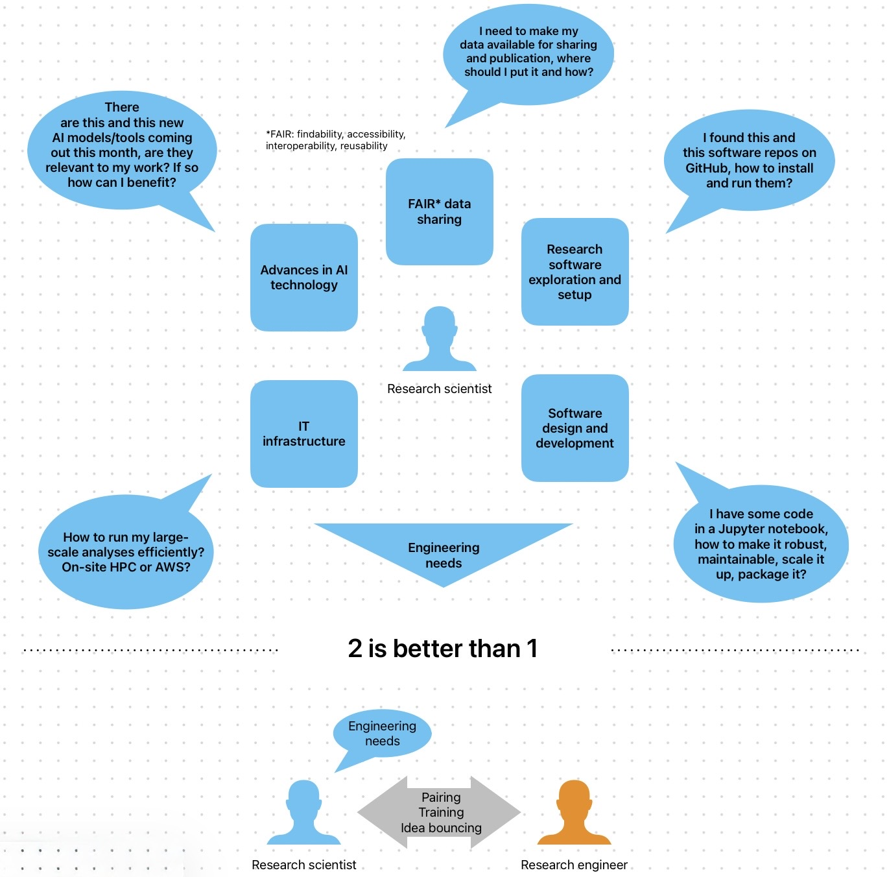
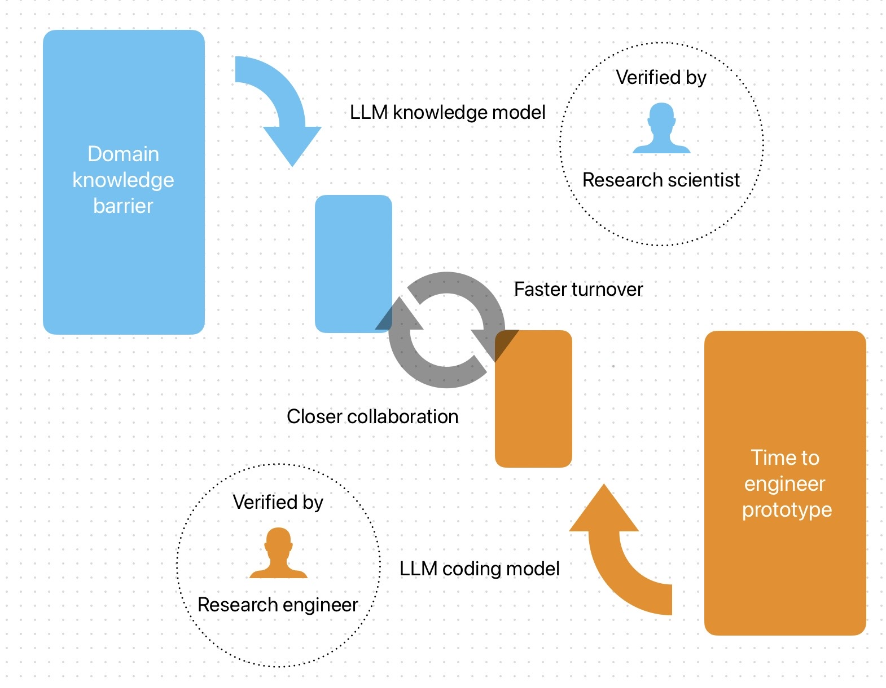

Cire
Redistributing human intelligence in science.
At the advent of the AI era, research needs engineers who think with scientists — not tools that only predict.
Begin the essayAdvent of a new era
Research software has been predominately developed by the scientists themselves.
However the engineering demands in science is growing at a speed that scientists themselves are struggling to keep up.
- Growing experimental scale
- Advanced machine learning methods for analysis
- Longer analysis pipelines and increasing reliance on HPC
What has large language model such as ChatGPT brought us?
A tool to retrieve knowledge at will
What has AI coding agent (such as Claude Code) brought us?
A tool to generate customised software solution at scale
These tools will transform how scientific research is conducted. I envision a new way of working in science — pairing the research scientist with a consulting research engineer.

The indispensable human interaction
For scientific researchers
They face research problems that require highly customised solutions.
- Their priority is not generalisation — make software for the masses
- They have a strong requirement for software to be precise and reproducible
For software engineers
As AI agentic coding pushes decentralised software development, there is higher value in being situated closer to the user.
With LLM and AI, scientists fill in their gaps of engineering skills while engineers fill in their gaps of scientific domain knowledge.
Yet they face the problem of validation.
Language models, being ultimately statistical predictors, do not possess this level of critical analytical power. They are a tool not a partner. They increase apparent productivity but do not change the velocity of human understanding.
What inspirations can we draw from what has been working in the past?
Scientists rely on peer review, software engineers on code review. Yet the review is not just about the end point, but also the journey along the way — especially in science. Every scientific discussion, sharing of results regardless of success or failure — they matter because these reviews come from different perspectives.
It takes 2 to think. Human intelligence, not AI, is what has been pushing the boundary of science forward so far.

Not just a software engineer, but a research engineer
We redefine research engineer as a profession that architect, orchestrate and optimise the research process itself.
A computational solution to a research problem can be dissected into
- Scientific logic
- Mathematical algorithm
- Software design and engineering
A consultant research engineer is able to provide support to academic groups on all these components.
An ideal research engineer is someone who:
- A doctoral level research scientist highly experienced in computational methods
- Has a strong interest in technological translation into scientific research application
- Seeks an alternative leadership route in academia focusing on method development
For the partner scientist, a research engineer is an experienced co-worker, reviewer, idea-bouncer, tech and data expert — integrated to the group and dedicated to the project.
Cire
Company of Informatics and Research Engineering — the consulting firm motioning for a redistribution of human intelligence in science at the advent of the AI era.
We are dedicated to turn AI outputs into human knowledge in science, and we need human, not AI, to do this job.
Cire works. Follow our journey.
Connect with Eric Hidari on LinkedIn